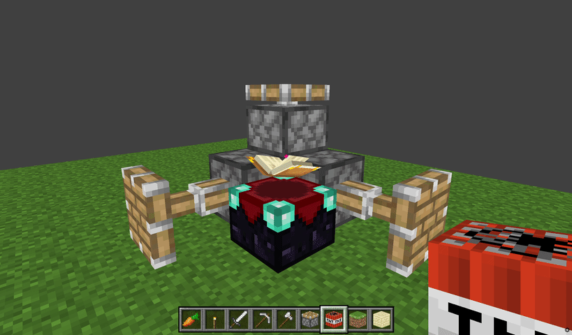
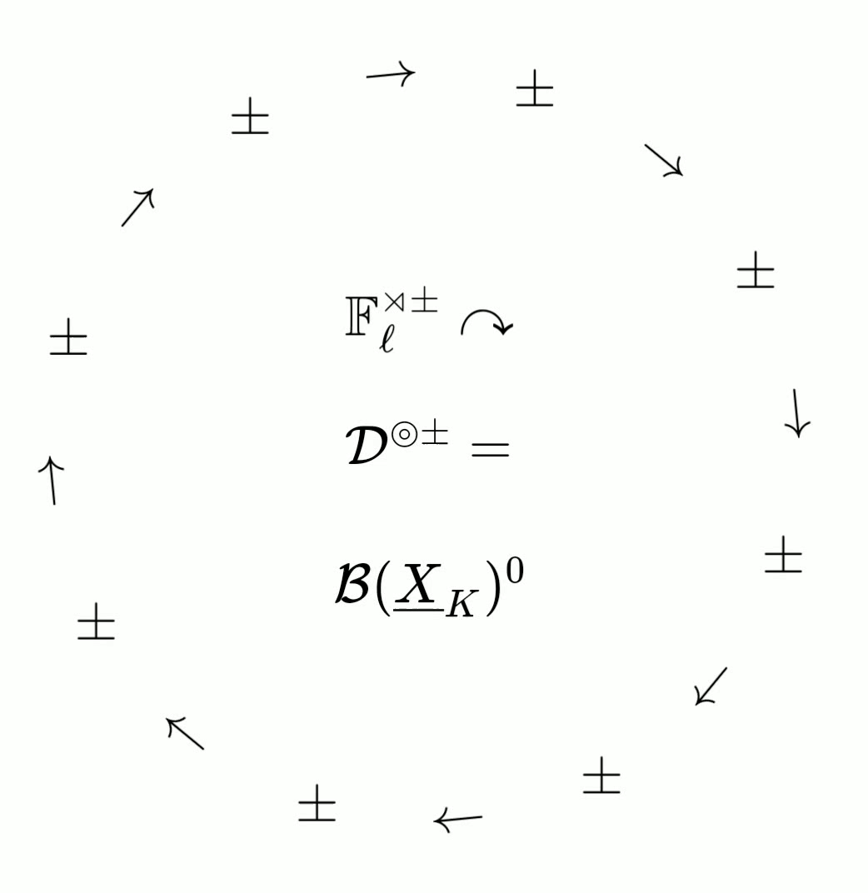
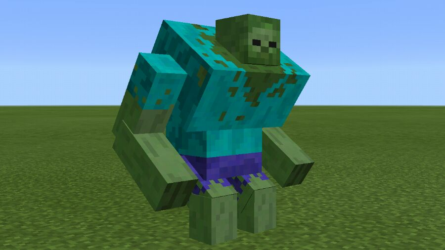

What did I do
-
March 09, 2024 - March 27, 2024. Achieve all the achievements of ICEY.
(Steam, 艾希)
-
March 01, 2024. Achieve all the achievements of Tsukikage (i.e., 月影のシミュラクル -解放の羽-).
(Steam, Tsukikage)
-
February 07, 2024 ~ May 14, 2024. Achieve all the achievements of Steins;Gate (pron. Shutainzu Gēto).
(Steam, 5pb, Steins;Gate)
-
December 23, 2023 ~ December 30, 2023. Achieve all the achievements of Witch Spring R.
(Steam, Witch Spring)
-
May 27, 2023. A simple minecraft was implemented using Ursina,
which includes many personally created blocks and entity models.
(Python, Minecraft, Blender)
a GIF that was preserved at that time

-
August 16, 2022. Translated the Brian Harvey's
Scheme vs. Python
.
(Computer Science, Translation).
-
January 01, 2022. Translated the paper
A New Proof of Erdős's Theorem on Monotone Multiplicative Functions
.
(Math, Translation).
-
January 01, 2022. By studying the Fermat point problem,
obtained an identity about trigonometric functions.
(Math, Analysis).
-
October 17, 2021. Created an animation about the
combinatorial structure of a D-Θ±ell-Hodge theater
using CSS and KaTeX.
(CSS, TeX)
a GIF that was preserved at that time

-
August 17, 2021. Obtained and proved an analytical inverse formula
for a class of generalized periodic continued fractions.
(Math, Analysis).
-
October 02, 2020. Translated a part of the paper
The Mathematics of Mutually Alien Copies: from Gaussian Integrals to Inter-universal Teichmuller Theory
.
(Math, Translation).
-
June, 2020. Rediscovered the Aczél-Popoviciu inequality,
And provided two new proof of Cauchy / Aczél inequality.
(Math, Elementary Mathematics).
-
April, 2019. Rediscovered the Lagrange interpolation formula.
(Math, Linear Algebra).
-
August 2018. Discovered the principle of Zhuowei Zhang's BlockLauncher (e.g., Native Addons & ModePE).
(MinecraftPE, BlockLauncher, C/C++, Java, JavaScript).
-
August 2018. Implemented the Mutated Zombie
model using only ModPE.
(MinecraftPE, BlockLauncher, JavaScript).
an image that was preserved at that time

-
Provides additional Native Functions and Hook Event support for ModPE through FFI.
Call chain: C++ ⇆ Java → JavaScript ⇆ Java ⇆ C++ → ⋯
- The first arrow comes from the callback of the BlockLauncher through the naive JNI.
- The second arrow comes from the Rhino used by the BlockLauncher,
a JVM's JavaScript interpreter.
- The third arrow comes from Rhino calling the
java.lang.ClassLoader
through JVM reflection.
The reverse arrow comes from the so-called interface dynamic proxy
Proxy.newProxyInstance.
- The fourth arrow comes from the
System.load of the JVM and JNI.
(MinecraftPE, BlockLauncher, C++, Java, JavaScript).
-
August 2017. Implemented the
End Crystal
that was closest to PC behavior
(e.g., Model, Rotation & Explosion etc.) at the time using only ModPE.
(MinecraftPE, BlockLauncher, JavaScript).
-
Note: At that time, I recorded a video and posted it on Twitter.
-
July 2017. Discovered the principle of Zheka Smirnov's IC2
(i.e, Industrial Craft 2) Mod windmill fan blade model.
(MinecraftPE, BlockLauncher, JavaScript).
-
June 2016. Implemented a large number of 3D Blocks Mod models for @Elvincth.
(MinecraftPE, BlockLauncher, JavaScript).
-
Everyday 2011 ~ 2013. Fighting against shrubs or weeds in the countryside (Don Quixote vs. Windmill).
Use a common set of plastic building block toys for Role-playing.
-
Everyday 2003 ~ now. Breathing.
-
February 02, 2003. Born.